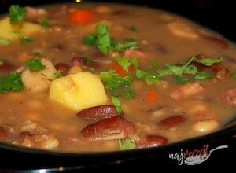

Recepty
/ Údená hrśtková polievka

Odkaz
Ingrediencie
údené mäso
300 g
strukovinová zmes (cícer, červená fazuľa, krúpy, bielej fazule, žltý a zelený hrach)
hrnček
mrkva
1 ks
zeler
1/4
petržlen
1ks
cibuľa
2ks
cesnak
3 strúčiky
zemiak
5 ks
korenie - soľ, korenie, nové korenie, bobkový list, majoránka
Postup
Najprv si vopred namočíme strukoviny. Mäso uvaríme.
Druhý deň si pripravíme panvicu a na oleji orestujeme cibuľku a pridáme nakrájanú zeleninu na kocky. Orestujeme do zlatista.
Pridáme strukoviny a zalejeme vývarom z údeného mäsa. Pridáme korenie a varíme do mäkka.
Ku koncu pridáme na kocky pokrájané zemiaky. Nakoniec zahustíme zápražkou z masla a múky.
Dochutíme soľou, korením, cesnakom a majoránom.